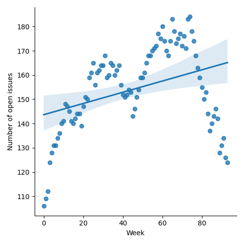
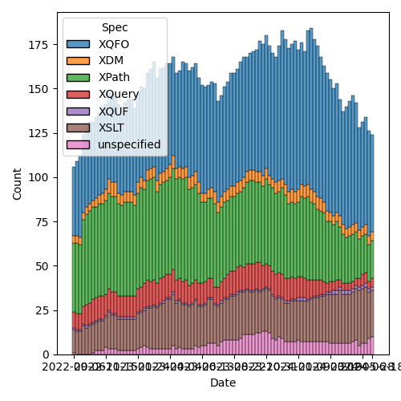
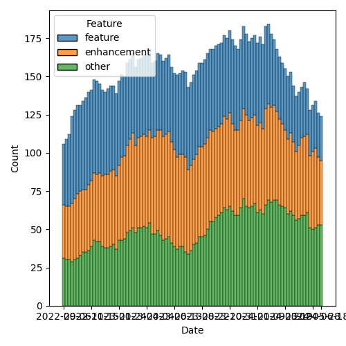

QT4 CG Meeting 083 Minutes 2024-06-25
Table of Contents
- Draft Minutes
- Summary of new and continuing actions
[1/6] - 1. Administrivia
- 2. Technical Agenda
- 2.1. PR #1296: 982 Rewrite of scan-left and scan-right
- 2.2. PR #1295: 1096 Redefine array:index-of to use deep-equal for comparisons
- 2.3. PR #1294: 46 Add xsl:item and xsl:sequence/@as
- 2.4. PR #1290: Fix keyword tests to treat "fn" = "function"
- 2.5. PR #1288: 1287 Define parse-xml error conditions
- 2.6. PR #1286: Updated list of incompatibilities in F+O
- 2.7. PR #1282: Revise fn:invisible-xml
- 2.8. PR #1262: 1160 Add collation-available() function
- 3. Any other business
- 4. Adjourned
Meeting index / QT4CG.org / Dashboard / GH Issues / GH Pull Requests
Draft Minutes
Summary of new and continuing actions [1/6]
[ ]QT4CG-079-01: WP to seek expert advice on hashing functions.[ ]QT4CG-080-05: NW to add absolute property to the parse-uri output[ ]QT4CG-080-07: NW to update the build instructions in the README[X]QT4CG-082-01: JLO to raise an issue about what to do when validation is requested but not possible.- Overtaken by #1288
[ ]QT4CG-082-02: DN to work with MK to come to agreement on the fn:ranks proposal[ ]QT4CG-083-01 MK to revise fn:collation-available to address multiple usages
1. Administrivia
1.1. Roll call [11/12]
CG gives regrets.
[X]Reece Dunn (RD)[X]Sasha Firsov (SF) [x:10-][ ]Christian Grün (CG)[X]Joel Kalvesmaki (JK)[X]Michael Kay (MK)[X]Juri Leino (JLO)[X]John Lumley (JLY)[X]Dimitre Novatchev (DN)[X]Wendell Piez (WP)[X]Ed Porter (EP)[X]C. M. Sperberg-McQueen (MSM)[X]Norm Tovey-Walsh (NW). Scribe. Chair.
1.2. Accept the agenda
Proposal: Accept the agenda.
Accepted.
1.2.1. Status so far…

Figure 1: “Burn down” chart on open issues

Figure 2: Open issues by specification

Figure 3: Open issues by type
1.3. Approve minutes of the previous meeting
Proposal: Accept the minutes of the previous meeting.
Accepted.
1.4. Next meeting
This next meeting is planned for 2 July.
1.5. Review of open action items [15/18]
[ ]QT4CG-079-01: WP to seek expert advice on hashing functions.[ ]QT4CG-080-05: NW to add absolute property to the parse-uri output[ ]QT4CG-080-07: NW to update the build instructions in the README[ ]QT4CG-082-01: JLO to raise an issue about what to do when validation is requested but not possible.[ ]QT4CG-082-02: DN to work with MK to come to agreement on the fn:ranks proposal
1.6. Review of open pull requests and issues
1.6.1. Blocked
The following PRs are open but have merge conflicts or comments which suggest they aren’t ready for action.
1.6.2. Merge without discussion
The following PRs are editorial, small, or otherwise appeared to be uncontroversial when the agenda was prepared. The chairs propose that these can be merged without discussion. If you think discussion is necessary, please say so.
Proposal: Merge without discussion.
Accepted.
1.6.3. Substantive PRs
The following substantive PRs were open when this agenda was prepared.
- PR #1296: 982 Rewrite of scan-left and scan-right
- PR #1295: 1096 Redefine array:index-of to use deep-equal for comparisons
- PR #1294: 46 Add xsl:item and xsl:sequence/@as
- PR #1293: 1289 Delete XQuery Appendix J
- PR #1290: Fix keyword tests to treat "fn" = "function"
- PR #1288: 1287 Define parse-xml error conditions
- PR #1286: Updated list of incompatibilities in F+O
- PR #1283: 77b: Update expressions
- PR #1282: Revise fn:invisible-xml
- PR #1266: 1158 Add array mapping operator
- PR #1265: 1161 Further revision of document-uri constraints
- PR #1263: 1224 Add xsl:accumulator-rule/@priority attribute
- PR #1262: 1160 Add collation-available() function
- PR #1255: 1253 whitespace in xsl:switch
- PR #1254: 729 Add rules for use of xsi:schemaLocation during validation
- PR #1244: 566-partial Rewrite parse-uri
- PR #1228: – Adding the BLAKE3 hashing algorithm to fn:hash
- PR #1209: 1183 Add transient mode and the transient{} expression
- PR #1185: 1179 array:values, map:values → array:get, map:get
2. Technical Agenda
2.1. PR #1296: 982 Rewrite of scan-left and scan-right
- PR #1296: 982 Rewrite of scan-left and scan-right
- MK: DN and I went separate ways, but let’s look at the current proposal which
I revised in light of DN comments. MK: The substantive part of the issue is
that the two functions were inconsistent with other functions wrt the position
parameter.
- … I tried to add one, and in the process, discovered that fold-left and fold-right were specified incorrectly.
- … So I took the other approach and removed the position argument from all of them.
MK discovers that the PR doesn’t contain the latest version. We’ll leave it for a week.
- DN: I applaud the decision to remove the position parameter.
2.2. PR #1295: 1096 Redefine array:index-of to use deep-equal for comparisons
- PR #1295: 1096 Redefine array:index-of to use deep-equal for comparisons
- MK: This is an issue that I raised. The original topic was that
array:index-ofas an accident of the way it was specified atomized one argument but not another. That gave some unexpected behaviors.- … That lead to a long discussion. There was a strong desire to have something parallel to sequence indexing.
- … The proposal I’ve come up with is that we define
array:index-ofusingfn:deep-equal. - … I’d support deleting the function entirely, but at least this is simple and consistent.
- DN: I’m pleased to see that
collationis the last parameter. Probably a sequence of collations is necessary. If the member of the array contains strings in different collations, then you’ll need different collations for the comparisons. - MK: That sounds pretty radical. I think if you want that degree of sophistication, you have to do it by hand.
- DN: One collation isn’t sufficient if you have a sequence of strings in different collations.
Some discussion of whether or not this is a problem that needs to be solved.
- MSM: On the topic of collations of properties of strings; that was not only proposed for 2.0, it was also proposed for XSD. The I18N group objected strenuously. I didn’t find the arguments especially persuasive, but the W3C did. It’s clear that many people with experience in internationalization would object to that. I think we shouldn’t go there.
Proposal: Accept this PR.
Accepted.
2.3. PR #1294: 46 Add xsl:item and xsl:sequence/@as
- PR #1294: 46 Add xsl:item and xsl:sequence/@as
- MK: This takes a number of issues raise separately and attempts to address
them all.
- … The
xsl:itemis designed to avoid thexsl:sequencewhen you know the item is going to be a singleton. - … Adding an
asattribute lets you use stronger type checking and more self-documenting code. - … The
xsl:iteminstruction must return a single item, not a sequence or empty sequence.
- … The
- DN: I thought XSLT 3.0 was already too large. Now I’m seeing something that I
don’t think needs to be done. An item is a kind of sequence. Why do we need a
separate instruction? There may be alternatives, we could add an attribute to
xsl:sequencefor example.- … I think XSLT has become an ocean of different things and they aren’t totally exclusive. I get lost trying to determine which things I should use and when. Are we going to eventually get xsl:* everything in the dictionary?
- MSM: Relating to cardinality, if the difference between item and sequence is
that item has fixed cardinality, then thinking about systems I have used, and
the decision about the empty sequence, I would like to be able to specify
empty-or-a-singleton and singleton. I think the
asattribute onxsl:sequencewould let me do that. - MK: Yes.
- MSM: FWIW, I think I’m neutral on whether adding
xsl:itemis useful enough to justify it. - JLY: Similar thoughts to MSM. You have a problem that if it might be empty, I
have to use
xsl:sequence. If I know it’s exactly one, I can usexsl:item. If I know there might be more than one, I have to usexsl:sequenceagain. And you can do it all withxsl:sequenceusingas. - MK: Where this is coming from is that people find it more natural to write
xsl:value-ofwhich has exactly the wrong semantics. - JLY: Yes. Maybe getting rid of
xsl:value-ofwould be nice. - RD: In terms of cardinality, there are four choices. Could we do this with a
requiredattribute. - MK: Yes, I thought the same thing, you could add
optional=true. - RD: It would make sense required by default and sequence optional by default. That’s probably what most people would want. Does that solve the problem?
- MK: I don’t think you need anything on sequence because you can use
as. You could allow?on anasattribute onxsl:item. - JK: The motivation for
asseems to be that anything with aselectshould have anas. What problem are we solving? - MK: I must admit, adding
astoxsl:sequencewhich defines the result of the expression. At the moment we only haveason places where you’re defining an API. This does open the way a little bit for demanding anasattribute in many more places. - RD: How about anywhere there’s a select?
- MK: Well,
xsl:attributeandxsl:processing-instructionhave aselectattribute and it would be overkill there.- … An
asattribute changes the behavior.
- … An
- MSM: Since I find that the only reason for me not to use
aswhenever I think about it is to delay errors until production! I can easily imagine wanting anasattribute onxsl:attributeif I want to specify something about the attribute type.- … The same is true of specifying the target of a processing instruction.
- … The extent to which this might change the behavior could be worrisome. I
do find something appealing that says if it has a
selectyou can have anas. It’s a little bit like making a particular form of assertion cheap and easy to express. - … If we decide to allow
xsl:itemto be optional, I really hate the idea of having anoptionalorrequiredattribute. I’d much rather have it be a?in theas.
- WP: What I’m hearing is that the problem is
xsl:value-ofwhich also hasselect. On balance, I think this addresses a very narrow concern with some users. I know plenty of people who likexsl:sequenceandselectbecause of the flexibility. - JLY: If you put
ason anxsl:itemtype, then it will be the onasattribute that has different semantics. You can’t put a+or*in those places. - NW: We’re not coming to consensus here.
- MK: I could split it. Or we could drop it.
- MSM: I had the impression that adding
asonselecthad positive to neutral reactions and much of the complication wasxsl:item.
Straw poll: separate the proposals or drop the whole thing?
Separate proposals: 7. Drop: 1. Abstaining: 1.
MK will revise PR as he thinks most appropriate.
2.4. PR #1290: Fix keyword tests to treat "fn" = "function"
- PR #1290: Fix keyword tests to treat "fn" = "function"
Stylesheet only fix. Not discussed. MK: merge it!
2.5. PR #1288: 1287 Define parse-xml error conditions
- PR #1288: 1287 Define parse-xml error conditions
- MK introduces the proposed error conditions for parsing XML.
- JLO: That completes my action! Thank you. I like the dynamic error for DTD validation, but I’m wondering why FODC0007 is the same for either DTD or XSD validation.
Some support for having two different error codes.
- DN: What is the meaning of FODC0008? Is it a GUID or something?
- MK: No, the form of the error identifiers was introduced by Andrew Eisenberg and kept with the IBM tradition of 8 character names.
Some discussion of the semantics of the names.
Proposal: Accept this PR with the amendment that there should be two different error codes for DTD and Schema validation errors.
MK to merge after updating.
2.6. PR #1286: Updated list of incompatibilities in F+O
- PR #1286: Updated list of incompatibilities in F+O
- MK: We changed the rules on the options parameter. If you use a parameter that isn’t recognized. That’s a backwards incompatibility. I added that to the appendix.
Proposal: accept this PR.
Accepted.
2.7. PR #1282: Revise fn:invisible-xml
2.8. PR #1262: 1160 Add collation-available() function
- PR #1262: 1160 Add collation-available() function
- MK: This changes the semantics of
fn:collation. It now generates the string but the error is raised byfn:collation-available()- … The only interesting thing about
fn:collation-available()is theusageparameter. There are three different reasons why you might want a collation and which collations might be available for each reason differs.
- … The only interesting thing about
- JLO: I like this. I like the usage parameter. My question is why can’t I do a
collation available for all of them? Suppose I want to use all three? Also:
where you are using
fn:collation-available()which usage is there? - MK: No
fn:collation()just builds the string. This function asks if it’s usable.- … I guess we could allow a sequence of enums.
- DN: We need something like union for the different usages. My observation was
that we probably could just have a single function,
fn:collation()and have it return an empty sequence if no such collation is available. - MK: The
fn:collationfunction can only be used to build UCA collations, but this function can be applied to any collation.
Some discussion of the UCA vs. vendor defined collations.
- JLY: Originally,
collationwould form the collation and error if it coudln’t. So the assumption now is that if you run it without checking the collection, the error will occur downstream.
ACTION: QT4CG-083-01 MK to revise fn:collation-available to address multiple usages
- DN: Even if we have
usagespecified, it doesn’t prevent the user from using it in another usage. That’s probably not something we can address statically. That raises questions about the usability of theusageparameter. - MK: This function doesn’t stop any existing code from working, it gives the user the ability to avoid the error.
3. Any other business
None heard.